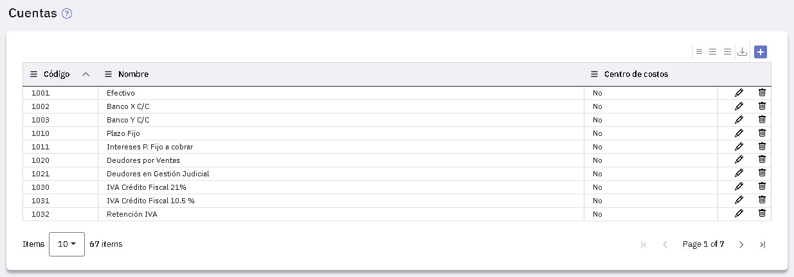
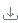
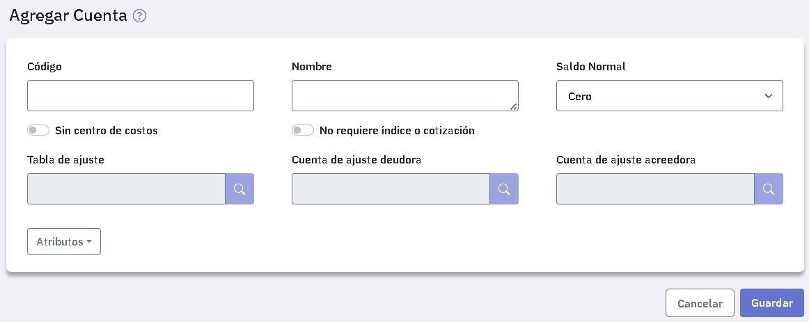
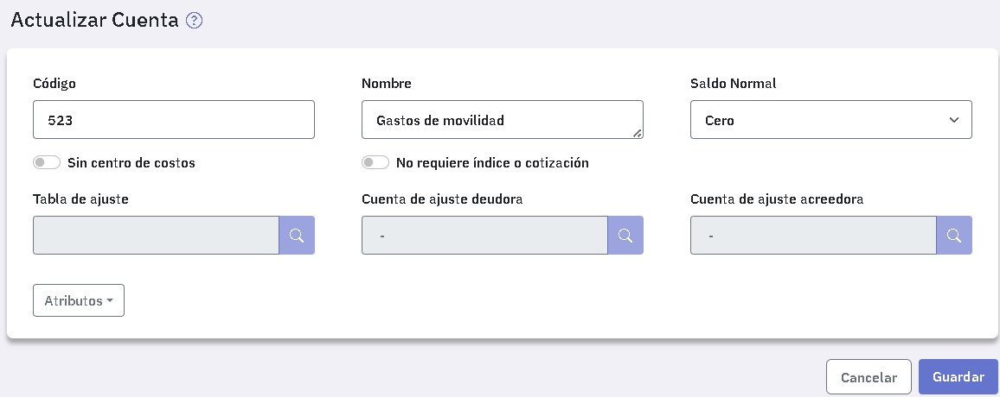

Cuentas
En esta ventana se definen las cuentas del plan de cuentas de tu empresa.
Al ingresar verás las cuentas que ya están definidas.

Mediante el botón "Exportar a Excel", podes exportar a una planilla de Excel, todas las cuentas definidas incluyendo todos los datos asociados a cada una de ellas.
Los datos que tenes que completar para dar de alta una cuenta son los siguientes:

Una vez que ingresaste el código y el nombre de la cuenta, tenés que seleccionar el "Saldo normal", este es el saldo habitual que suele tener la cuenta.
Si la cuenta se imputa a través de centros de costos, presioná el botón "Sin centro de costos" que cambia a "Con centro de costos". En este caso, cada vez que la imputes, obligatoriamente, deberás indicar el centro de costos al cual aplica el monto ingresado.
Si la cuenta corresponde a una moneda extranjera o se ajusta de acuerdo a un índice, presioná el botón "No requiere índice o Cotización" que cambia a "Requiere índice o Cotización", habilitándose los campos:
- Tabla de ajuste: Si la cuenta maneja moneda extranjera, ingresá la tabla de cotización correspondiente y, análogamente, si se ajusta por índice. Tené que en ambos casos dichas tablas deben haberse dado de alta con anterioridad.
En caso que una vez dada de alta la cuenta tengas que agregar/modificar/eliminar el indice o cotización, tené en cuenta:
- Si la cuenta no tiene movimientos podés asignarle cualquier tabla de indices o cotizaciones o eliminarla si ya la tiene una asignada.
- Si la cuenta tiene movimientos, tenés tres casos diferentes:
- Que no requiera tabla: en este caso, para las tablas de ínice solamente, podés indicar que requiere tabla e informarla.
- Que requiera tabla y tenga asignada una de tipo Índice: en este caso podés borrarla o cambiarla por otra de tipo Índice.
- Que requiera tabla, y tenga asignada una de tipo Cotización: En este caso no podés ni borrarla ni cambiarla por otra.
- Cuenta de ajuste deudora: Es la cuenta que se acredita cuando a la cuenta se le efectúa un ajuste al debe.
- Cuenta de ajuste acreedora: Es la cuenta que se debita cuando a la cuenta se le efectúa un ajuste al haber.
El ingreso de las cuentas de ajuste es opcional y están destinadas a la generación de los asientos de ajuste. Al generar dichos asientos se deben informar cuentas de ajuste deudor y acreedor, por lo cual, si omitís estos datos ahora, se utilizarán las cuentas que informes al momento de la generación.
Tené en cuenta que las cuentas de ajuste que informes no pueden tener seleccionadas las opciones "Con centro de costos"ni "Requiere índice o Cotización", en caso que informes una cuenta de este tipo, verás un Aviso que te impedirá ingresarla.
En esta instancia, o posteriormente, podés asociar atributos, éstos te permiten agrupar las cuentas por determinadas características, por ejemplo, cuentas de ajuste, cuentas de resultado, entre otras. Luego podrás realizar operaciones o emitir informes incluyendo las cuentas que tienen un determinado atributo.
Para asociar atributos a la cuenta simplemente seleccionalos de la lista que se abre en  .
.
Los atributos son de suma utilidad y para conocer su alcance podés consultar Atributos.
Por ejemplo podes definir atributos del tipo "Ajuste por dólar", "Ajuste por IPC", "Ajuste por euros" y cuando des de alta cuentas ajustables asocias el atributo que le corresponda.
El siguiente es un ejemplo de alta de una cuenta que trabaja con centro de costos a la que se le asociaron dos atributos.
